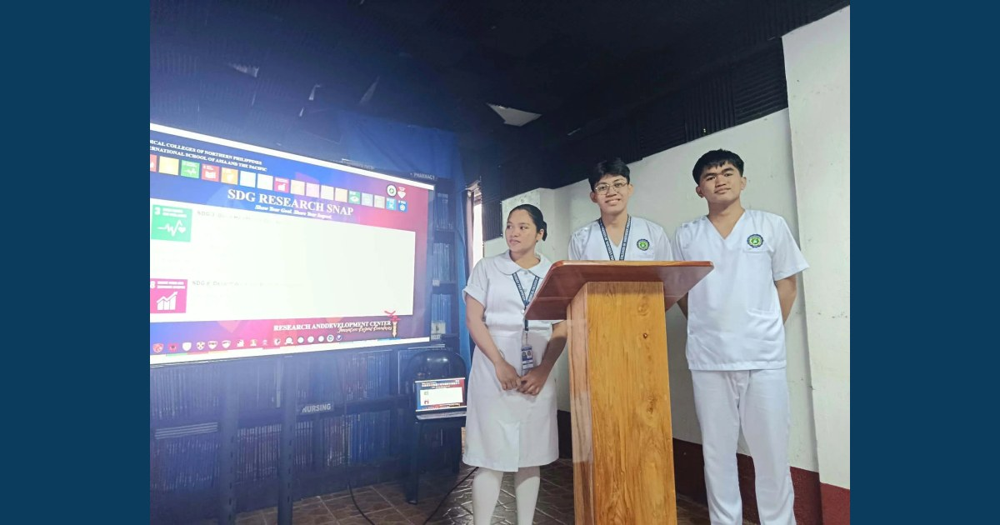

MCNP BS Nursing Students Strengthen Research Engagement Through Proposal Defense

MCNP conducted the BS Nursing Research Proposal Defense on November 9, 2026, supporting nursing students’ research communication, scholarly inquiry, and engagement with healthcare-related concerns.
Read full article